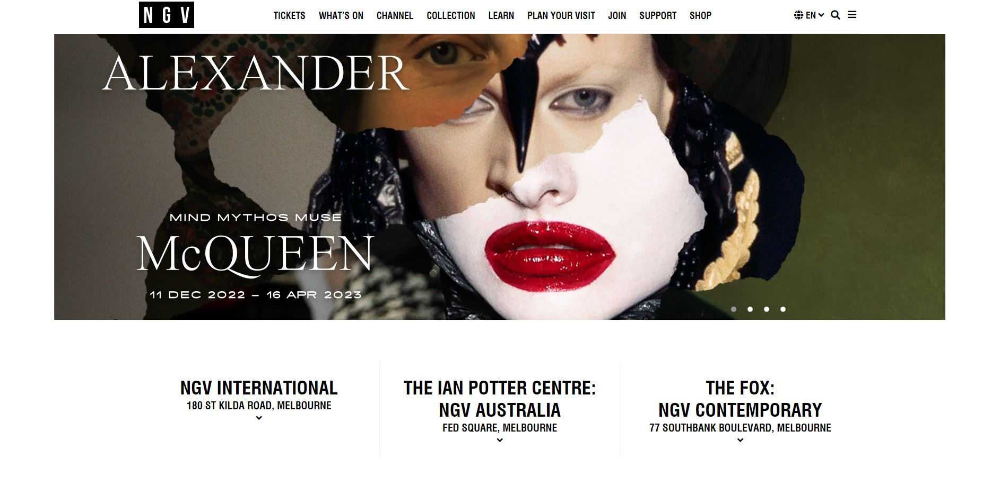

Interactive Experience Research Project
by Isabella Tsaketas (s3946051)

1. Upon visiting the NGV website, my attention was immediately captured by the prominently displayed acknowledgement of the traditional custodians of the land, the Wurundjeri Woi Wurrung people.This acknowledgement, presented in large white text and positioned at the centre of the screen, stands out vividly against the black background that encases the remainder of the page.
- Read acknowledgment of country
- Click on the white arrow to access the full website
- scroll down the page and read
- scroll up to the top of the page
- click the large banner at the top of the page with Alexander Mcqueen
- watch a video of alexander McQueen exhibit
- click “what's on” at the top of the page (header)
- scroll down once, read and click “see more exhibitions”
- scroll down the page to read all exhibition titles
- scroll back up
- click on: ”freedom of movement” exhibition title and photo
- scroll down the page and read exhibit information
- click on “exhibition sensory map” arrow
- new pdf page opens up
- scroll through PDF
- click back arrow button to return to NGV website
3. From the list above it is apparent that I spent the majority of the time reading the provided information about the exhibitions.
4. The activity that occupied most of my time was scrolling. While it seems from the aforementioned list that I also clicked frequently, scrolling took up more time since I would typically spend a few seconds scrolling as opposed to just one-second clicking.
5. It is my belief that the designer aimed to develop a website that is both user-friendly and straightforward in its approach, with the primary objective being to provide information to users. In this particular scenario, the information being provided pertains to the NGV.
6. The comprehensiveness of the NGV website is indicative of the designer's intent to create a platform that provides visitors with a wealth of information. Each page on the website is packed with informative content, ranging from detailed information about specific exhibitions, and public transport options to the location, learning resources, ticket prices, and more. This comprehensive approach serves to ensure that visitors to the site are well-informed about all aspects of the NGV, and can make informed decisions about their visit. The website's emphasis on relevance and clarity underscores the designer's goal of creating an accessible and informative platform for all visitors.
7. In my view, the NGV website is ideally suited for short-term interactions. These interactions may happen multiple times a year depending on how often the user wants to visit the NGV.
8. The nature of the NGV website is simple and user-friendly allowing for users to quickly and easily access the information they need, reducing the time they need to spend on the website. It is apparent that the website should be visited multiple times a year due to the website's frequent updates, where visitors can easily plan their next visit to the NGV, be it for the latest exhibit or seasonal events, such as school holidays. By providing visitors with the ability to engage with the site in short bursts, and over an extended period of time, the NGV website serves as a valuable resource for anyone interested in visiting the NGV.